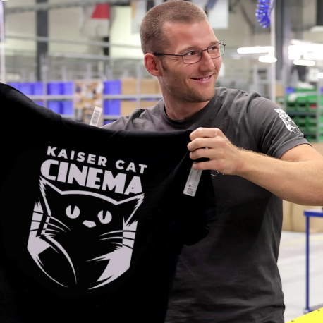
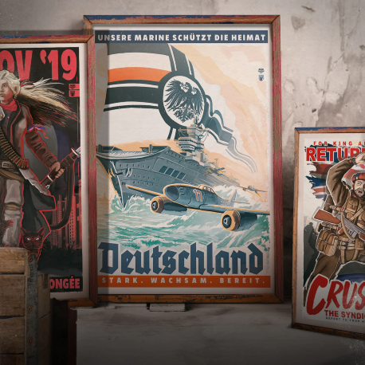
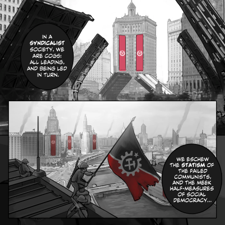

La Historia de nuestro equipo
Kaiserreich y Kaiser Cat Cinema Kaiserreich es una serie de modificaciones de historia alternativa desarrolladas por primera vez para la serie de juegos Hearts of Iron a principios de los años 2000. El universo se basaba en una premisa simple: '¿Y si Alemania hubiera ganado la Primera Guerra Mundial?'. El proyecto fue fundado como 'Toda Rusia' por un usuario anónimo de Internet conocido solo bajo el apodo 'Sarmatia1871'. Hasta hoy, la verdadera identidad de Sarmatia es conocida por muy pocas personas. Un artista de Kaiserreich, Vincent fundó Kaiser Cat Cinema (KCC) en 2016 con un grupo de antiguos desarrolladores de mods de Kaiserreich. Nuestro objetivo se convirtió en difundir el mundo de Kaiserreich por todas partes. Más tarde, también empezamos a producir nuestros propios programas y proyectos de historia alternativa, como The Divided States y American Kingdoms. 
Merchandising y crowdfunding
La idea de Kaiser Cat Cinema nació en PDX-CON 2017. Para la ocasión, había pintado tres carteles de propaganda del Kaiserreich que se distribuyeron gratuitamente en la convención. Estos carteles se convirtieron en un éxito de culto inesperado: después de la convención, muchos miembros de la comunidad pidieron la opción de comprar sus propios carteles. A partir de ahí, comenzamos a explorar la idea de crear contenido en una plataforma financiada mediante el crowdsourcing. Nuestro colectivo de artistas produce contenido disponible gratuitamente para YouTube y otros canales, y la comunidad es libre de donarnos a través de Patreon o comprar mercancía. 
Cómics, espectáculos y animaciones
Junto a los videos del universo, también creamos cómics, animatics e incluso cortometrajes de acción en vivo que exploran varios temas de la historia alternativa. Nuestros proyectos incluyen.
• The Divided States, una serie animada/cómica ambientada durante la Segunda Guerra Civil Americana.
• Nights in Shanghai, un drama de audio noir ambientado en las Legation Cities del Kaiserreich.
• Los reinos americanos, una serie de audio que explora una reinvención medieval de la guerra revolucionaria. Si desea saber más, visite nuestros sitios de proyectos a continuación!
Programa Patreon
Una parte importante de nuestra iniciativa de crowdfunding es incluir a nuestros Patreons and Crew en todas nuestras artes y animaciones. De esta manera, nos aseguramos de que todos nuestros Patreons sean inmortalizados en nuestros espectáculos y animaciones. 'Para que cada proyecto puede ser un testamento duradero a la fuerza de voluntad del Kaiser Cat Cinema Patreon'. 